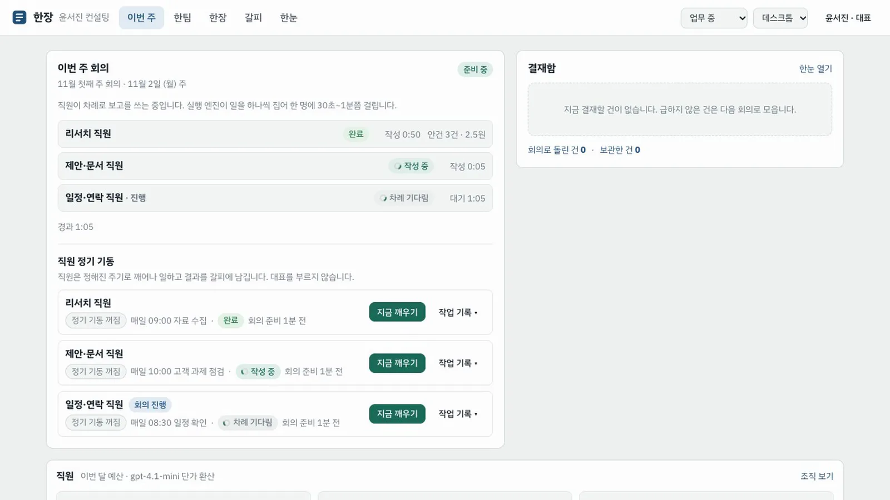
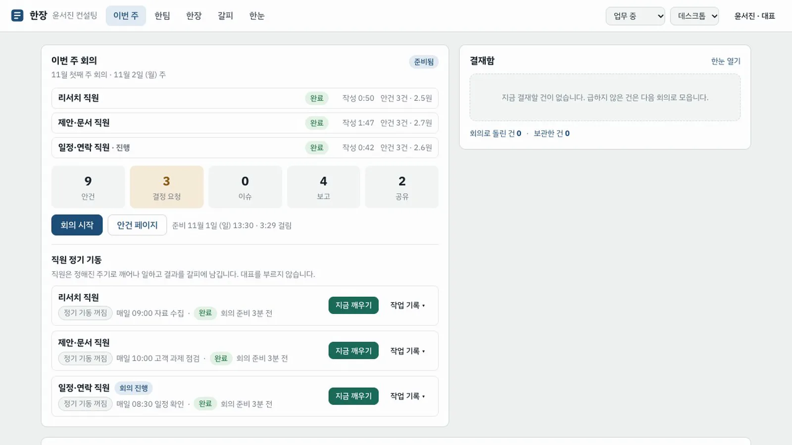
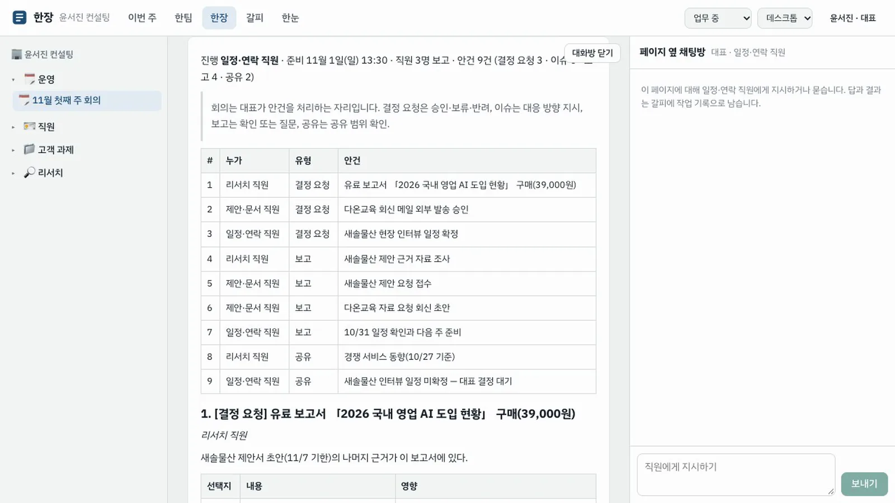
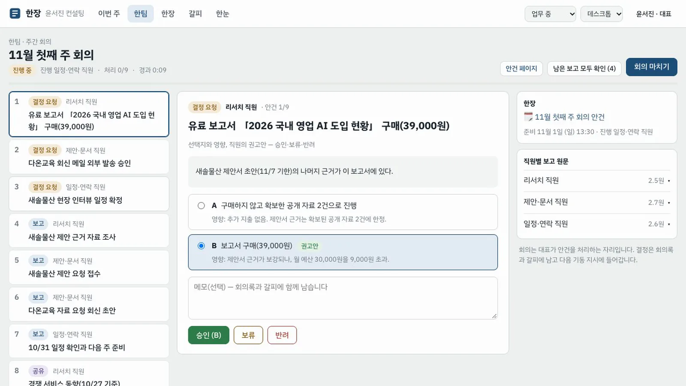
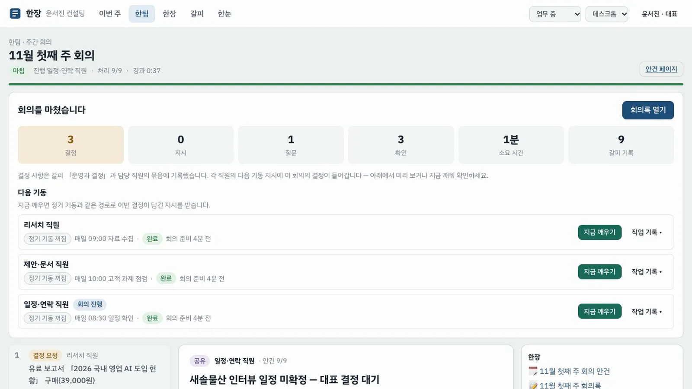
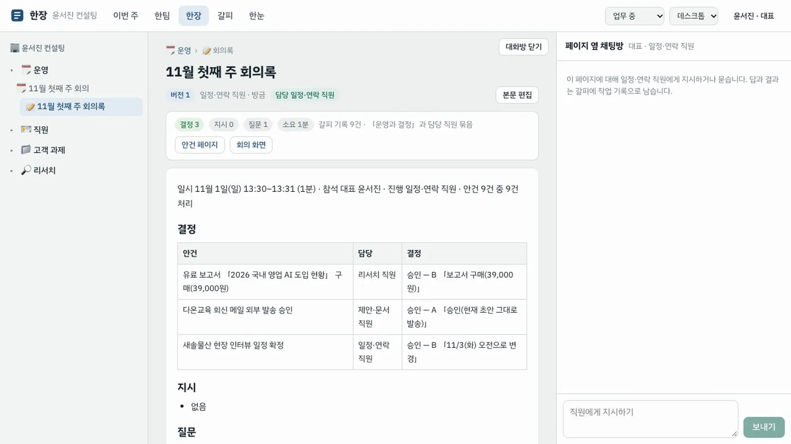
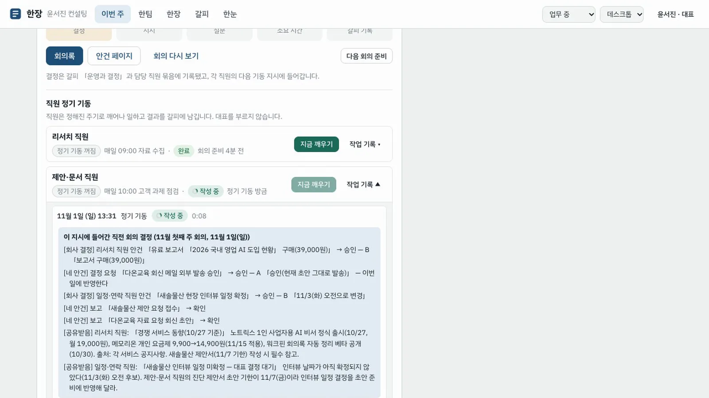

직원들이 정기 기동으로 이번 주 보고를 쓰고, 진행 직원이 그것을 안건 페이지로 모으면, 대표는 회의에서 안건을 차례로 처리합니다. 결정은 회의록과 갈피에 남고 다음 기동 지시에 들어갑니다.
무엇을 · 왜#
수시 알림 대신 정해진 시간에 모아 보고받는 것이 정례회의입니다. 한팀의 회의는 에이전트끼리 토론하는 장면이 아닙니다. 대표가 판단할 안건을 처리하는 자리입니다.
| 주기 | 무슨 일 | 대표의 관여 |
|---|---|---|
| 상시(정기 기동) | 직원이 정해진 주기로 깨어나 일하고 결과를 갈피에 기록 | 없음 |
| 회의 준비 | 직원별 보고를 진행 직원이 안건 페이지로 모음 | 없음 |
| 주간 회의 | 보고·결정 요청·이슈·공유 처리 | 승인·보류·반려, 지시, 확인·질문 |
| 안건 유형 | 내용 | 대표의 처리 |
|---|---|---|
| 보고 | 완료한 일과 진행 상황 | 확인, 필요하면 질문 |
| 결정 요청 | 선택지와 각 영향, 직원의 권고안 | 승인 · 보류 · 반려 |
| 이슈 | 막힌 일과 원인 | 대응 방향 지시 |
| 공유 | 다른 직원에게도 필요한 정보 | 공유 범위 확인 |
정기 기동은 Process GPT 작업 목록(todolist)을 그대로 씁니다. 한장이 직원 앞으로 에이전트 작업을 넣으면 deepagents 폴러가 그 작업을 집어 직원의 프로필로 실행합니다. 결과는 작업 목록에 남고, 한장이 그것을 갈피 기록과 안건으로 옮깁니다. 주기는 pg_cron 이 맡습니다.
따라 하기#
이 장은 2장의 직원 셋이 있는 회사에서 합니다. 데모 계정은 node scripts/seed-weekly-demo.mjs --reset 로 만들 수 있습니다. 직원들이 보고할 지난주 기록(설명용 예시)이 함께 들어갑니다.
- 회의 준비. 홈의 이번 주 회의에서 회의 준비를 누릅니다. 직원 세 명이 「차례 기다림 → 작성 중 → 완료」로 바뀝니다. 폴러가 한 번에 한 작업씩 집으므로 셋이 차례로 돌고, 모두 끝나는 데 3~4분 걸립니다. 직원마다 걸린 시간과 안건 수, 환산 비용이 보입니다.

- 준비됨. 셋이 끝나면 안건 수, 결정 요청·이슈·보고·공유 수가 숫자로 보이고 회의 시작과 안건 페이지가 나옵니다.

- 안건 페이지. 안건 페이지를 누르면 한장 「11월 첫째 주 회의」 페이지(담당 일정·연락 직원)가 열립니다. 누가·유형·안건 표와 결정 요청마다 선택지·영향 표, 권고안이 있습니다.

- 회의 시작. 홈으로 돌아가 회의 시작을 누릅니다. 왼쪽은 안건 목록, 가운데는 지금 처리할 안건, 오른쪽은 안건 페이지와 직원별 보고 원문입니다.
- 안건 처리. 결정 요청은 선택지를 보고 승인 (A) 처럼 누릅니다. 이슈는 대응 방향을 쓰고 지시를 누릅니다. 보고는 확인하거나 질문 → 질문 남기기를 누르고, 공유는 공유 범위 확인을 누릅니다. 위의 「처리 n/N」이 하나씩 올라갑니다. 남은 보고는 남은 보고 모두 확인으로 한 번에 넘길 수 있습니다.

- 회의 마치기. 회의 마치기를 누르면 결정·지시·질문·확인 수와 걸린 시간, 갈피 기록 수가 정리됩니다.

- 회의록. 회의록 열기를 누르면 안건 페이지 아래에 「11월 첫째 주 회의록」이 생겨 있습니다. 결정·지시·질문·확인·공유가 정리되어 있습니다. 결정 사항은 갈피의 「운영과 결정」 묶음과 담당 직원의 쓰기 묶음에 기록됩니다.

- 다음 기동. 홈의 직원 정기 기동에서 결정을 받은 직원의 지금 깨우기를 누릅니다. 기록을 펼치면 "이 지시에 들어간 직전 회의 결정"이 맨 위에 보입니다. 끝나면 직원의 출력 첫 줄에 회의 결정을 반영했다는 내용이 나옵니다.

정기 기동 켜기
직원 줄의 정기 기동 꺼짐 알약을 누르면 직무 기술서의 주기(예: 매일 09:00)로 pg_cron 작업이 걸립니다. 시험 계정이 매일 깨어나지 않도록 채용 직후 자동으로 켜지는 않습니다. 일시 중지되거나 중지된 직원의 기동은 건너뜁니다.
PoC 의 한계
deepagents 폴러는 전역 큐에서 한 번에 하나씩 집으므로, 다른 일이 밀려 있으면 회의 준비가 늦어집니다. 직원이 쓴 글은 사실을 지어내지 말라고 지시하지만 완전히 막지는 못합니다. 음성 회의 모드, 월간 회의와 신규 기획안 심사는 2단계입니다.
확인 문제#
- 회의 준비 중에 직원 셋이 동시에 쓰지 않고 차례로 쓰는 이유는?
- 회의에서 내린 결정은 어디에 남고, 어떻게 다음 일에 쓰이나요?
- 결정 요청이 직원마다 한 건으로 제한되는 이유는?
정답
- 정기 기동이 Process GPT 작업 목록의 에이전트 작업이고, deepagents 폴러가 그 큐에서 한 번에 하나씩 집기 때문입니다.
- 회의록 페이지와 갈피(「운영과 결정」·담당 직원 묶음)에 남습니다. 다음 정기 기동 지시에 "직전 회의 결정"으로 들어갑니다.
- 직원마다 제안을 쏟아내면 회의가 또 다른 알림 폭탄이 되기 때문입니다. 제안은 절차와 상한을 거칩니다(원칙 4).